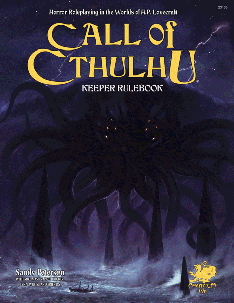

Investigative horror · 7th edition
Call of Cthulhu
An investigative horror roleplaying game about people uncovering terrible truths and confronting the unknown.

Official cover source ↗
What's it like?
Players become investigators who research clues, question witnesses, and explore dangerous places. Strange books, hidden cults, and otherworldly beings draw them deeper into the mystery. The Sanity system tracks the impact of disturbing discoveries. The seventh-edition Keeper Rulebook provides the core rules, monsters, and guidance for the Game Master.
Why I'm considering it
It could suit a group that enjoys piecing together clues and building suspense. A mystery gives everyone something to discuss, and the atmosphere offers a different kind of challenge from our fantasy adventures.